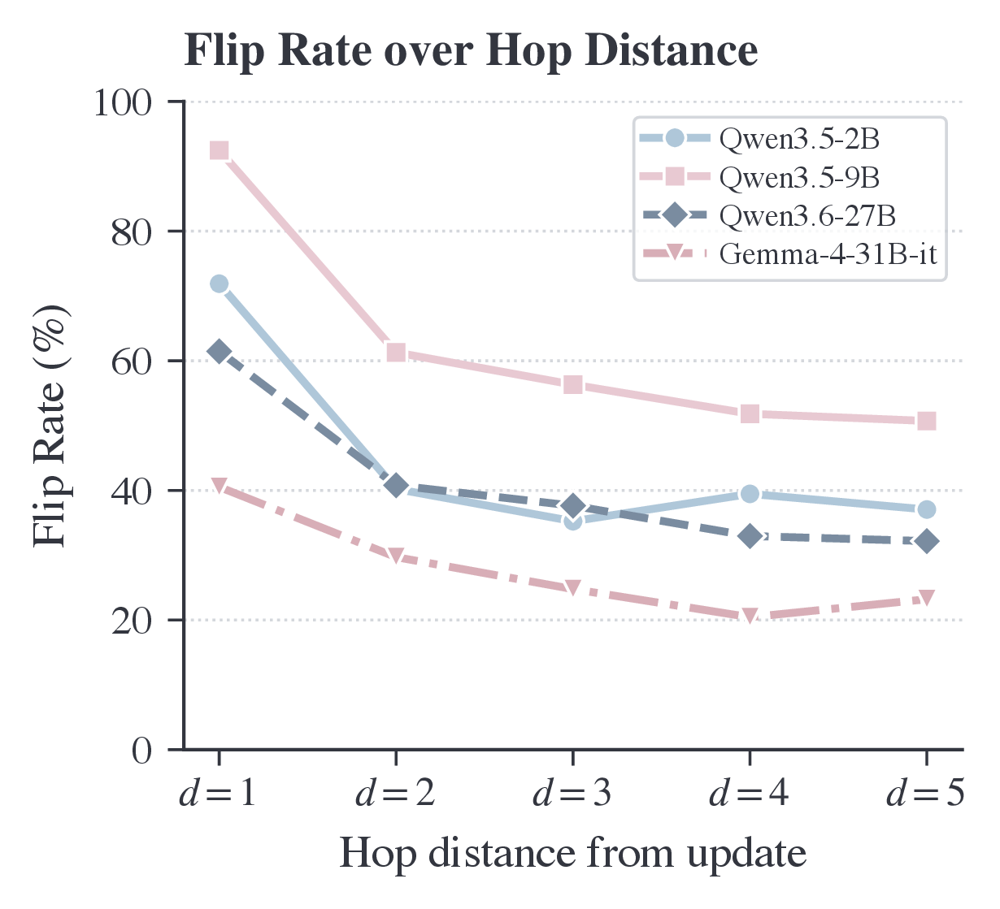
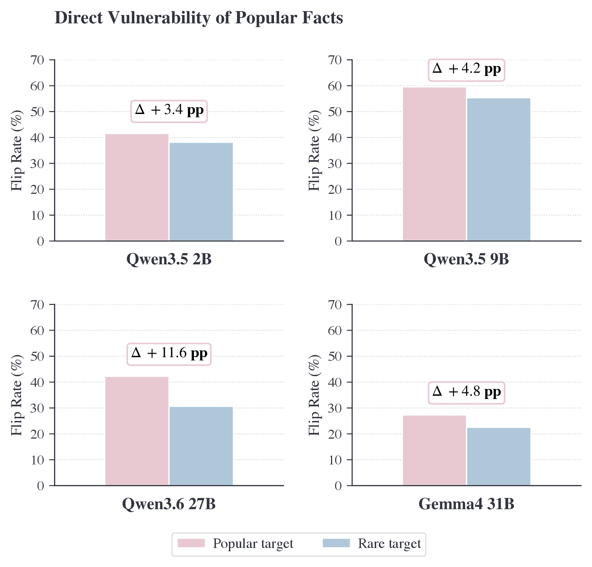
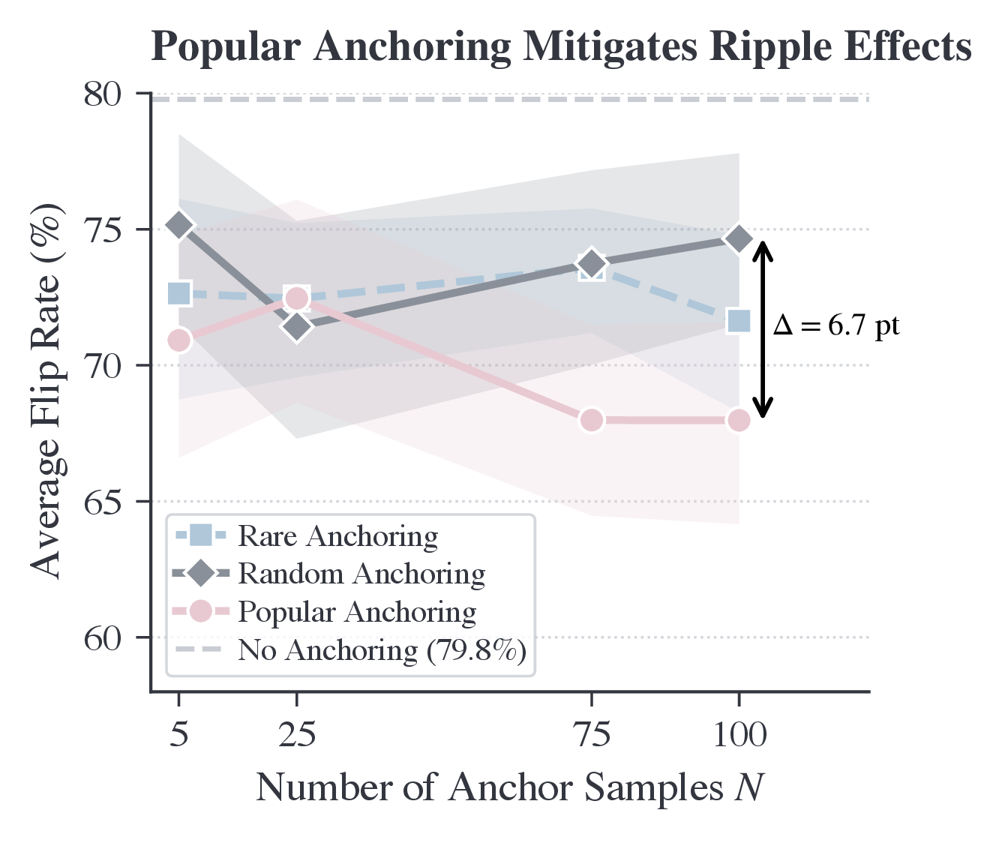

Build FACTPROP
Expand Wikipedia facts and verify candidate triples against Wikidata.
FACTPROP · Research project
Popular knowledge is more vulnerable to collateral corruption—and propagates update errors farther. PopAnchor reduces the damage.
Interactive demo
Paste a sentence or upload a small dataset to inspect the structural popularity of entities found in the browser index. This explorer reports graph connectivity; it does not predict an individual model’s error rate.
What this measures: structural popularity inside FACTPROP—the number of verified forward facts pointing to an entity. It is not search frequency, public awareness, or cultural popularity.
Experimental English label matching, case-insensitive. Use canonical entity names for reproducible scores. Context rules cover limited ambiguities; translations, abbreviations, typos, and some common words may not resolve correctly.
Matched entities will appear here with their object in-degree and structural tier.
Your file is processed locally and never leaves this browser.
No fixed schema is required. Known text fields are preferred; otherwise text from arbitrary columns or nested values is extracted. Review results carefully because metadata may also contain entity names. The first 5,000 non-empty values are analyzed; each may contain up to 20,000 characters.
The same uploaded dataset is prepared below for context-aware entity linking. Review the extracted text before sending; model suggestions can be wrong.
Semantic service is not configured.
Up to 20 rows, 2,000 characters per row, 8,000 total; at most 20 entity mentions. Uploading prepares a preview but does not send it.
Our application does not store submitted text or model responses. Providers process requests under their own policies. Rate limiting stores counters and daily hashed IP identifiers.
Updating a language model through fine-tuning keeps its knowledge current, but can also corrupt facts it previously answered correctly. We ask a structural question: among facts already encoded by the model, which ones are most vulnerable to collateral damage, and which updates spread the most errors?
We construct FACTPROP, a verified Wikipedia-derived factual graph whose triples are connected through shared entities, then trace correct-to-incorrect flips across graph distances after controlled updates. Across four open-weight models, high-connectivity knowledge is consistently more vulnerable and its updates have a broader downstream impact. Based on this finding, we introduce PopAnchor, a lightweight rehearsal strategy that preserves a small set of popular facts during updating and reduces forgetting.
Method
FACTPROP makes the neighborhood around each fact explicit, allowing us to measure how a local update changes knowledge one to five graph hops away.
Expand Wikipedia facts and verify candidate triples against Wikidata.
Fine-tune on a controlled factual statement while retaining a fixed evaluation set.
Measure correct-to-wrong changes from immediate neighbors through distance five.
Rehearse a compact, structurally chosen set to reduce collateral forgetting.
We define an entity’s structural popularity by its forward-edge object in-degree: the number of verified facts that point to it. This is a graph property, not a claim about cultural importance.
Results
Across the evaluated models, graph connectivity is associated with both vulnerability to collateral errors and the extent of error propagation.



Please use the following citation for this project.
@unpublished{zhang2026popular,
title = {Popular Knowledge Propagates More Errors in LLM Knowledge Updating},
author = {Zhang, Yuji and Wang, Weibing and Qian, Cheng and Zhou, Duo and Hakkani-Tür, Dilek and McKeown, Kathleen and Zhai, Chengxiang and Ji, Heng},
year = {2026}
}